CI/CD¶
Every gate and every deploy is a GitHub Actions workflow under
.github/workflows/. All of
them run on GitHub's standard ubuntu-latest runner except marola-sea-publish, which needs a GPU.
The design behind this layout is MIP-0065.
How a change reaches marola.dev¶

site-data is an orphan branch that holds only generated output. Several workflows write to it,
all through scripts/site-data-push.sh, which retries when two pushes race. site.yml copies its
smoke/, coverage/, stats/ and docs/ directories into the page on every build. The coverage,
smoke and docs writers trigger a rebuild right away; repo-stats waits for the 3-hourly schedule.
The workflows¶
| Workflow | Trigger | Runner | Gates or deploys | Secrets and variables | By hand |
|---|---|---|---|---|---|
ci.yml |
PR; push to main |
ubuntu-latest |
The merge gates, each run only when dorny/paths-filter says its inputs changed: build-test (scalafmt, scalafix, compile, test), quality-other (ruff, actionlint, hadolint, the scripts/* self-tests, workflow_runners.py), docs-build (mkdocs --strict). On main only: the coverage badge and repo-stats go to site-data |
GITHUB_TOKEN |
just build && just test && just quality locally; re-run from the Actions tab |
ci-short-circuit-pr-close.yml |
PR closed | ubuntu-latest |
Cancels the closed PR's in-flight runs, which the concurrency group can't see | GITHUB_TOKEN |
— |
pr-body.yml |
PR opened, reopened, ready, pushed | ubuntu-latest |
Fills the description from the commits (scripts/uprd.sh); skips forks and bot branches |
GITHUB_TOKEN |
just uprd |
api-docs.yml |
push to main touching Scala, scripts/**.py, docs/**, mkdocs/**; dispatch |
ubuntu-latest |
Builds scaladoc, pdoc and the mkdocs site (Kroki containers) into docs/ on site-data |
GITHUB_TOKEN |
gh workflow run api-docs.yml; just docs locally |
site.yml |
every 3 h; push to main touching the site or pipeline; after API docs; dispatch |
ubuntu-latest |
Builds every area's board and deploys site/dist plus site-data to Pages (github-pages environment) |
GITHUB_TOKEN |
gh workflow run site.yml [-f area=<id>] |
site-health.yml |
every 6 h; dispatch | ubuntu-latest |
Checks what marola.dev actually serves. Doesn't block deploys: a red run means missing upstream data | — | gh workflow run site-health.yml [-f base=<url>] |
docker.yml |
PR and push to main touching the image inputs; dispatch |
ubuntu-latest |
PR: builds jvm and runs a start-up check, never pushes. main and dispatch: push :jvm, :jvm-<sha> (amd64 + arm64) and :native, :native-<sha> (amd64) to GHCR |
GITHUB_TOKEN |
gh workflow run docker.yml [-f dev=true] (:dev is dispatch-only) |
docker-local.yml |
push to main touching the model, corpus or benchmark; dispatch |
ubuntu-latest |
Builds :local-<sha>, runs just benchmark against it, and promotes it to :local only if it's within tolerance of docs/benchmarks/ |
GITHUB_TOKEN |
gh workflow run docker-local.yml [-f tolerance=0.05] |
docker-smoke.yml |
daily 09:30 UTC; dispatch | ubuntu-latest |
Runs the published image's --summarize live, writes smoke/ to site-data (the map's "Last live run") |
GITHUB_TOKEN |
gh workflow run docker-smoke.yml [-f lat=… -f lon=…] |
marola-e2e.yml |
dispatch only | ubuntu-latest |
E2ESpec against live Overpass/Open-Meteo/IMA, optionally with Ollama |
— | gh workflow run marola-e2e.yml [-f with_llm=true]; just e2e locally |
scala-steward.yml |
Mondays 12:00 UTC; dispatch | ubuntu-latest |
Opens dependency-update PRs for the sbt build (dependabot covers Actions and pip) | STEWARD_GH_TOKEN, falling back to GITHUB_TOKEN |
gh workflow run scala-steward.yml |
profile-activity.yml |
PR merged into main |
ubuntu-latest (reusable workflow's runner: input) |
Pings h0ffmann/h0ffmann to refresh its activity list; without the token it only leaves a notice |
PROFILE_DISPATCH_TOKEN |
— |
marola-sea-publish.yml |
dispatch only | [self-hosted, marola-sea] |
Trains marola-sea (SFT + DPO), exports GGUFs, publishes to Hugging Face, tags marola-sea-v<N> |
HF_TOKEN |
gh workflow run marola-sea-publish.yml -f preset=tiny; just runner-up first |
ghcr-retention.yml was deleted: it failed every week on an upstream bug, and it only existed
because GHCR storage used to be billed while the repo was private (MIP-0065 §4.4).
The self-hosted rule¶
Only marola-sea-publish.yml may run on a self-hosted runner, and it may never gain a
pull_request, pull_request_target or workflow_call trigger. Everywhere else a runs-on: or
runner: value must be a literal, never a ${{ }} expression that could resolve to the desktop. scripts/workflow_runners.py enforces this in
quality-other.
The repo is public, and on a public repo anyone can open a pull request. A pull_request job on
a self-hosted runner would run a fork's code on the maintainer's machine, which is what GitHub
warns against in "Self-hosted runners should almost never be used for public repositories". The
old reason for self-hosting was running out of minutes on a private repo (#340), and it no longer
applies: standard hosted runners are free for public repos. Larger and GPU runners are always
billed, so GPU training stays on the desktop, behind a manual dispatch.

The maintainer's manual settings¶
Repository settings that no workflow or agent can change. MIP-0065 depends on them:
- Fork PR approval: Settings → Actions → General → "Require approval for all external contributors". The two weaker levels stop asking once a user has had any commit merged.
- The desktop runner carries the
marola-sealabel only, so noruns-on: ubuntu-latestjob can land on it. - No
CI_RUNNERvariable. The repo has no Actions variables at all (checked 2026-09-29). - The
marola-dev/marolaGHCR package is public, sodocker pull ghcr.io/marola-dev/marola:jvmworks logged out. A package's first push creates it private; as of 2026-09-29 it still is. - Secrets:
HF_TOKEN(Hugging Face write, formarola-sea-publish),STEWARD_GH_TOKEN(a fine-grained token that lets scala-steward open PRs;GITHUB_TOKENis refused by the org's Actions policy, #496), and optionallyPROFILE_DISPATCH_TOKEN.